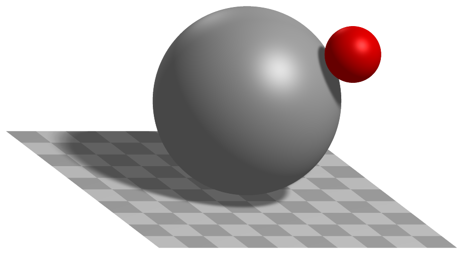
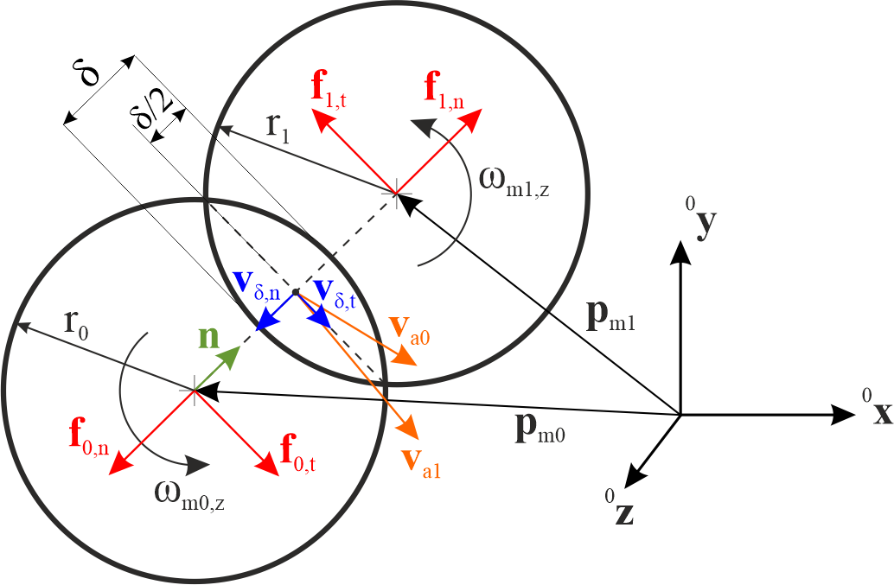
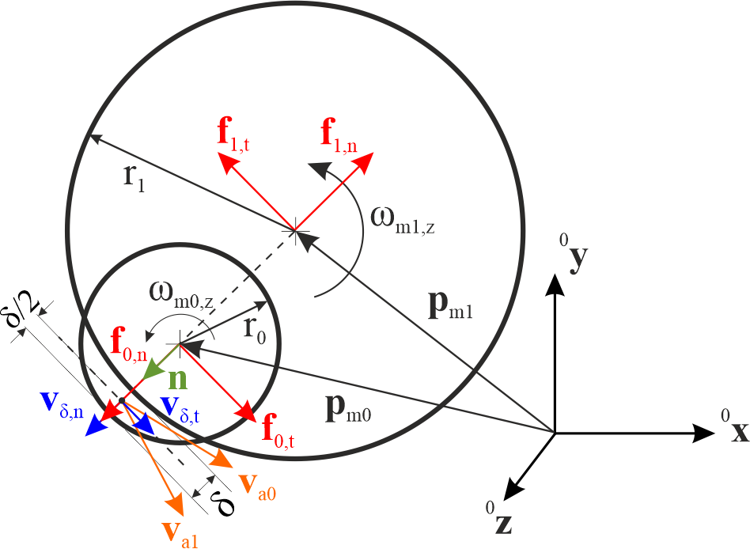

ObjectContactSphereSphere
A simple contact connector between two spheres, using various contact models and the option for contact of sphere inside hollow sphere (marker1). The connector implements at least the same functionality as in GeneralContact and is intended for simple setups and for testing, while GeneralContact is much more efficient due to parallelization approaches and efficient contact search.


Authors: Gerstmayr Johannes, Weyrer Sebastian
Simpler: mbs.CreateSphereSphereContact adds this item, with what it needs, in one call.
Interface
Nodes it takes: NodeGenericData
Markers it acts on: those providing
Position(andOrientationifdynamicFrictionis not zero): MarkerBodyPosition, MarkerBodyRigid, MarkerNodePosition, MarkerNodeRigid, MarkerSuperElementPosition, MarkerSuperElementRigid, MarkerKinematicTreeRigid
Parameters
The parameters of the item; in a dictionary, its type is ‘ContactSphereSphere’:
name |
type |
size |
default |
description |
|---|---|---|---|---|
name |
String |
‘’ |
constraints’s unique name |
|
markerNumbers |
ArrayMarkerIndex |
2 |
[ invalid (-1), invalid (-1) ] |
(symbol: \([m0,m1]\tp\)) list of markers representing centers of spheres, used in connector |
nodeNumber |
NodeIndex |
invalid (-1) |
(symbol: \(n_d\)) node number of a NodeGenericData with numberOfDataCoordinates = 4 dataCoordinates, needed for discontinuous iteration (friction and contact); data variables contain values from last PostNewton iteration: data[0] is the gap, data[1] is the norm of the tangential velocity (and thus contains information if it is stick or slip); data[2] is the impact velocity; data[3] is the plastic overlap of the Edinburgh Adhesive Elasto-Plastic Model, initialized usually with 0 and set back to 0 in case that spheres have been separated. |
|
spheresRadii |
Vector2D |
2 |
[-1.,-1.] |
(symbol: \([r_0,r_1]\tp\)) list containing radius of sphere 0 and radius of sphere 1 [SI:m]. |
isHollowSphere1 |
Bool |
False |
flag, which determines, if sphere attached to marker 1 (radius 1) is a hollow sphere. |
|
dynamicFriction |
UReal |
0. |
(symbol: \(\mu_d\)) dynamic friction coefficient for friction model, see StribeckFunction in exudyn.physics, Module: physics |
|
frictionProportionalZone |
UReal |
0.001 |
(symbol: \(v_{reg}\)) limit velocity [m/s] up to which the friction is proportional to velocity (for regularization / avoid numerical oscillations), see StribeckFunction in exudyn.physics (named regVel there!), Module: physics |
|
contactStiffness |
UReal |
0. |
(symbol: \(k_c\)) normal contact stiffness [SI:N/m] (units in case that \(n_\mathrm{exp}=1\)) |
|
contactDamping |
UReal |
0. |
(symbol: \(d_c\)) linear normal contact damping [SI:N/(m s)]; this damping should be used (!=0) if the restitution coefficient is < 1, as it changes its behavior. |
|
contactStiffnessExponent |
PReal |
1. |
(symbol: \(n_\mathrm{exp}\)) exponent in normal contact model [SI:1] |
|
constantPullOffForce |
UReal |
0. |
(symbol: \(f_\mathrm{adh}\)) constant adhesion force [SI:N]; Edinburgh Adhesive Elasto-Plastic Model |
|
contactPlasticityRatio |
UReal |
0. |
(symbol: \(\lambda_\mathrm{P}\)) ratio of contact stiffness for first loading and unloading/reloading [SI:1]; Edinburgh Adhesive Elasto-Plastic Model; \(\lambda_\mathrm{P}=1-k_c/K2\), which gives the contact stiffness for unloading/reloading \(K2 = k_c/(1-\lambda_\mathrm{P})\); set to 0 in order to fully deactivate Edinburgh Adhesive Elasto-Plastic Model model |
|
adhesionCoefficient |
UReal |
0. |
(symbol: \(k_\mathrm{adh}\)) coefficient for adhesion [SI:N/m] (units in case that \(n_\mathrm{adh}=1\)); Edinburgh Adhesive Elasto-Plastic Model; set to 0 to deactivate adhesion model |
|
adhesionExponent |
UReal |
1. |
(symbol: \(n_\mathrm{adh}\)) exponent for adhesion coefficient [SI:1]; Edinburgh Adhesive Elasto-Plastic Model |
|
restitutionCoefficient |
PReal |
1. |
(symbol: \(e_\mathrm{res}\)) coefficient of restitution [SI:1]; used in particular for impact mechanics; different models available within parameter impactModel; the coefficient must be > 0, but can become arbitrarily small to emulate plastic impact (however very small values may lead to numerical problems) |
|
minimumImpactVelocity |
UReal |
0. |
(symbol: \(\dot\delta_\mathrm{-,min}\)) minimal impact velocity for coefficient of restitution [SI:1]; this value adds a lower bound for impact velocities for calculation of viscous impact force; it can be used to apply a larger damping behavior for low impact velocities (or permanent contact) |
|
impactModel |
UInt |
0 |
(symbol: \(m_\mathrm{impact}\)) number of impact model: 0) linear model (only linear damping is used); 1) Hunt-Crossley model; 2) Gonthier/EtAl-Carvalho/Martins mixed model; model 2 is much more accurate regarding the coefficient of restitution, in the full range [0,1] except for 0; NOTE: in all models, the linear contactDamping is added, if not set to zero! |
|
activeConnector |
Bool |
True |
flag, which determines, if the connector is active; used to deactivate (temporarily) a connector or constraint |
|
visualization |
VObjectContactSphereSphere |
parameters for visualization of item |
Visualization parameters
The parameters of VObjectContactSphereSphere, given as visualization:
name |
type |
size |
default |
description |
|---|---|---|---|---|
show |
Bool |
False |
set true, if item is shown in visualization and false if it is not shown; draws spheres by given radii |
|
color |
Float4 |
4 |
[0.7,0.7,0.7,1.] |
RGBA connector color; if R==-1, use default color |
Drawing
Drawn as all connectors; the two spheres with contact.showSpheres, in contact.colorSpheres.
Settings beyond those of all connectors: contact.colorSpheres, contact.showSpheres, contact.tilingSpheres.
Output variables
Available as OutputVariableType in sensors, Get...Output() and other functions:
output variable |
symbol |
description |
|---|---|---|
Position |
contact center point (also given for positive gap, when no contact occurs) |
|
Displacement |
global displacement vector between the two spheres midpoints |
|
DisplacementLocal |
1D Vector, containing only gap |
|
Velocity |
global relative velocity between the two spheres midpoints |
|
Force |
global contact force vector |
|
Director1 |
contains normalized vector from marker 0 to marker 1 |
|
Torque |
global torque due to friction on marker 0; to obetain torque on marker 1, multiply the torque with the factor \(\frac{r_1+g/2}{r_0+g/2}\) |
Detailed description
Definition of quantities
intermediate variables |
symbol |
description |
|---|---|---|
marker m0 position |
\(\LU{0}{\pv}_{m0}\) |
global position of sphere 0 center as provided by marker m0 |
marker m0 orientation |
\(\LU{0,m0}{\Rot}\) |
current rotation matrix provided by marker m0 |
marker m1 position |
\(\LU{0}{\pv}_{m1}\) |
global position of sphere 1 center as provided by marker m1 |
marker m1 orientation |
\(\LU{0,m1}{\Rot}\) |
current rotation matrix provided by marker m1 |
data coordinates |
\(\xv=[x_0,\,x_1,\,x_2,\,x_3]\tp\) |
hold the current gap (0), the (norm of the) tangential velocity (1), the impact velocity (2), and the plastic deformation (3) of the adhesion model |
marker m0 velocity |
\(\LU{0}{\vv}_{m0}\) |
current global velocity which is provided by marker m0 |
marker m1 velocity |
\(\LU{0}{\vv}_{m1}\) |
current global velocity which is provided by marker m1 |
marker m0 angular velocity |
\(\LU{0}{\tomega}_{m0}\) |
current angular velocity vector provided by marker m0 |
marker m1 angular velocity |
\(\LU{0}{\tomega}_{m1}\) |
current angular velocity vector provided by marker m1 |
Connector forces
This section outlines the computation of the forces acting on the two spheres when they are in contact with each other. Two types of forces can act on the spheres due to the connector:
normal force computed according to the chosen impact model \(m_\mathrm{impact}\) and with contact damping if \(d_c\neq0\); this type of force does not create a torque acting on the spheres.
tangential force due to a regularized friction law to model dry friction between the spheres; this type of force creates a torque acting on the spheres and is computed independently of the chosen impact model if \(\mu_d\neq0\) is set. Note that in the implemented model, rolling deformations are not considered, i.e. the friction is only a function of the relative tangential velocity between the spheres at the contact point.


Fig. 43 Two spheres that are in contact, showing a force on marker 1 in normal direction due to overlap; forces on marker 0 act in opposite direction.
Calculations reflect the case for outer contact of two spheres using \(h_1=1\). In case that isHollowSphere1=True, we set \(h_1=-1\) while the remaining formulas are unchanged. In Fig. 43 the sphere sphere and in Fig. 44 the sphere hollowsphere contact case are shown.
For the following, the gap \(g\) between the two spheres is computed as
and the overlap \(\delta\) is the negated gap: \(\delta=-g\). In the contact case, the overlap \(\delta\) is positive. If the first sphere is a hollow sphere, the gap consequently reads
such that if sphere 0 is in contact with the inner side of sphere 1, i.e. \(|| \LU{0}{\pv}_{m1} - \LU{0}{\pv}_{m0} ||\geq(r_1-r_0)\) holds, the gap is negative and the overlap \(\delta\) is positive. The normal vector \(\LU{0}{\nv}\) always points from marker 0 to the contact point:
In the case of sphere-sphere contact, \(\LU{0}{\nv}\) points from marker 0 to marker 1, and in the case of sphere-hollowsphere contact, \(\LU{0}{\nv}\) has the reversed direction as if it points from marker 1 to marker 0.
The scalar normal (gap) velocity \(v_\mathrm{\delta,n}\) is computed with the velocities \(\LU{0}{\vv}_{m0}=\LU{0}{\dot{\pv}}_{m0}\) and \(\LU{0}{\vv}_{m1}=\LU{0}{\dot{\pv}}_{m1}\)
and the tangential (gap) velocity \(\LU{0}{\vv}_\mathrm{\delta,t}\) at the contact point, that is needed for the friction model, reads


Fig. 44 One sphere and one hollowsphere that are in contact, showing a force on marker 1 against normal direction due to overlap; forces on marker 0 act in opposite direction.
To take the angular velocity of the spheres into account, the velocities \(\LU{0}{\vv}_{a0}\) and \(\LU{0}{\vv}_{a1}\) at the contact point are computed using Euler’s theorem for kinematics:
For the velocity \(\LU{0}{\vv}_{a0}\) of sphere 0 at the contact point the sphere-sphere and sphere-hollowsphere contact cases are computed equally. For the velocity \(\LU{0}{\vv}_{a1}\) of sphere 1 at the contact point, one negative sign \(h_1\) is needed since the vector pointing to the contact point has the same direction for both spheres and one negative sign \(h_1\) is needed to correctly compute the length of the vector pointing from the center of sphere 1 to the contact point.
The normal force acting on marker 1 is generally written as
where \(f_c\) is the elastic and \(f_d\) the damping part. The damping \(f_d\) is always computed the same, independent of the chosen impact model:
The negative sign is because of the damping acting against the gap velocity: in the case of a positive normal (gap) velocity, the damping acts against \(\LU{0}{\nv}\) for marker 1. As an illustrative case, the gap velocity is positive, if sphere 0 does not move, i.e. \(\LU{0}{\vv}_{m0}=0\) holds, and sphere 1 in direction of the normal vector. Note that this holds for the sphere-sphere contact and sphere-hollowsphere contact cases. The elastic force \(f_c\) is computed depending on the chosen impact model.
CASE \(m_\mathrm{impact}=0\): the Adhesive Elasto-Plastic model described in Morrissey2014 is used. This model captures the key bulk behavior of cohesive powders and granular soils. For the impact model, the plastic overlap \(\delta_p\) is needed. It is computed with
The Adhesive Elasto-Plastic model distinguishes three different cases, modeling the loading and unloading behavior of the spheres:
Note that \(k_2\) is computed with \(k_2 = k_c/(1-\lambda_\mathrm{P})\). The terms with the stiffness \(k_c\) and \(k_2\) have a positive sign, since they act in the direction of \(\LU{0}{\nv}\) for marker 1. The constant adhesion force \(f_\mathrm{adh}\) and the stiffness \(k_\mathrm{adh}\) act against \(\LU{0}{\nv}\), which corresponds to a force sticking the spheres together.
CASE \(m_\mathrm{impact}=1\): the restitution model proposed by Hunt and Crossley in Hunt1975 is used to simulate the energy loss of the spheres during contact:
with
The restitution coefficient \(e_\mathrm{res}\) describes the ration of the normal (gap) velocity before and after the impact of the spheres. In the case of \(e_\mathrm{res}<1\), the impact has a plastic portion, resulting in a force acting against \(\LU{0}{\nv}\) for marker 1, which is why \(\lambda\) must be negative in that case. \(\dot\delta_\mathrm{-}\) is the initial relative velocity, which is either the minimum impact velocity or the normal (negated gap) velocity:
Note that the Hunt-Crossley restitution is valid for a very small energy loss (\(e_\mathrm{res}\approx1\)) Carvalho2019.
CASE \(m_\mathrm{impact}=2\): a generalization of the Hunt-Crossley restitution proposed by Carvalho and Martins in Carvalho2019 is used for \(e_\mathrm{res} > \frac{1}{3}\) and a model proposed by Gonthier et al. in Gonthier2004 is used for impacts with a high plastic proportion, \(e_\mathrm{res} < \frac{1}{3}\). Note that the two models are identical at \(e_\mathrm{res} = \frac{1}{3}\). \(\lambda\) is therefore computed as follows:
The tangential force acting on marker 1 due to the friction model acts against the tangential velocity \(\vv_\mathrm{\delta,t}\), see the computation of \(\vv_\mathrm{\delta,t}\) in Equation (85). Thus, the tangential force for marker 1 is computed as
Note that the case distinction above is made to ensure that for very small relative velocities the friction force does not become implausibly high. Taken together, the force acting on marker 1 due to the connector is computed as
the force acting on marker 0 is \(\LU{0}{\fv}_{m0}=-\LU{0}{\fv}_{m1}\). The global torque \(\LU{0}{\ttau}_{m1}\) acting on marker 1 due to the connector is computed as
and on marker 0 as
It can be seen that the torque due to the connector is the same for both spheres, if \(r_0=r_1\) applies.
Mini example
#a ball dropped onto a large fixed sphere: penalty contact with its state in a data node
inertia = InertiaSphere(mass=1, radius=0.1)
node = mbs.AddNode(NodeRigidBodyEP(referenceCoordinates=[0,0,1.2]+eulerParameters0))
ball = mbs.AddObject(ObjectRigidBody(nodeNumber=node, mass=inertia.Mass(), inertia=inertia.GetInertia6D()))
mbs.AddLoad(LoadMassProportional(markerNumber=mbs.AddMarker(MarkerBodyMass(bodyNumber=ball)), loadVector=[0,0,-9.81]))
mGround = mbs.AddMarker(MarkerBodyRigid(bodyNumber=oGround, localPosition=[0,0,0]))
mBall = mbs.AddMarker(MarkerBodyRigid(bodyNumber=ball, localPosition=[0,0,0]))
nData = mbs.AddNode(NodeGenericData(numberOfDataCoordinates=4, initialCoordinates=[0,0,0,0]))
mbs.AddObject(ObjectContactSphereSphere(markerNumbers=[mGround, mBall], nodeNumber=nData, spheresRadii=[1, 0.1],
contactStiffness=1e5, contactDamping=1e3))
mbs.Assemble()
simulationSettings = exu.SimulationSettings()
simulationSettings.timeIntegration.numberOfSteps = 1000
mbs.SolveDynamic(simulationSettings)
#at rest on top: 1.1 - m*g/k
exu.sys['testResult'] = mbs.GetNodeOutput(node, exu.OutputVariableType.Position)[2] #1.0999
Relevant Examples (Ex) and TestModels (TM) with weblink to github: newtonsCradle.py (Ex), rollerBearningModel.py (Ex), contactComparisonTest.py (TM), contactSphereSphereTest.py (TM), contactSphereSphereTestEAPM.py (TM), createSphereQuadContact.py (TM), createSphereTriangleContact.py (TM), explicitSolversPostNewtonTest.py (TM), inactiveConnectorForceTest.py (TM), sphereTriangleTest2.py (TM)